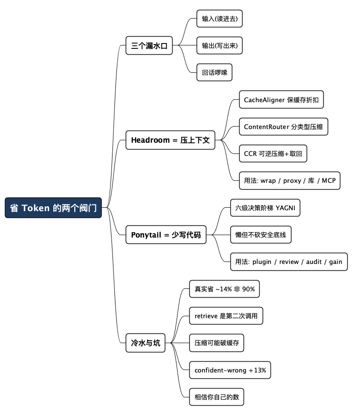

Headroom 和 Ponytail：给 AI 编程的 Token 账单拧上两个阀门
Posted on 五 03 7月 2026 in Tech
| Abstract | Headroom 和 Ponytail：给 AI 编程的 Token 账单拧上两个阀门 |
|---|---|
| Authors | Walter Fan |
| Category | Tech |
| Version | v1.0 |
| Updated | 2026-07-03 |
| License | CC-BY-NC-ND 4.0 |
Headroom 和 Ponytail：给 AI 编程的 Token 账单拧上两个阀门
前阵子我写过一篇《用 Codex 怎么省 Token》，讲的是"手动的上下文卫生"——什么时候开新会话、AGENTS.md 怎么瘦身、模型和推理档位怎么选。今天换个角度：有没有现成的工具，能帮我们把这件事自动化一点？
有。最近社区里刷屏的是两个开源小工具，名字都挺随意：一个叫 Headroom，一个叫 Ponytail（马尾辫）。它们经常被放在一起讲，但其实管的是完全不同的两件事。
先把话挑明，省得你看半天才发现搞错了方向：AI 编程的 token 账单，漏水的地方一共就三个口子——模型"读进去"多少、agent"写出来"多少代码、模型"回话"多啰嗦。 Headroom 拧的是第一个阀门（读进去），Ponytail 拧的是第二个阀门（写出来）。它们不是竞品，而是同一个水龙头上的两个旋钮。
一句话记住它们的分工： Headroom 让模型少读点，Ponytail 让 agent 少写点。
看完这篇，你能带走的是：两个工具各自的原理、在自己项目里的安装和使用步骤、以及一张"哪个漏水口该拧哪个旋钮"的对照表。还有——那些广告不爱说的坑。
先认识一下这三个"口子"
在讲工具之前，得先把账算清楚。你用 Claude Code、Codex 这类 agent 写代码，钱是这么烧掉的：
- 输入 token（input）：模型每一轮都要"读"一遍上下文——系统提示、仓库信息、你贴进去的文件、工具返回的日志和 JSON。agentic 工作流里，这块经常是大头，因为工具输出又臭又长，还一轮一轮往上堆。
- 输出 token（output）：模型"写"出来的东西。在 Opus 这类模型上，输出的单价能到输入的 5 倍。而且这里有个复利效应——这一轮写出来的代码，下一轮又会作为上下文被读进去，越滚越大。
- 回话的啰嗦程度："好的，让我来帮你……"这种开场白、把你刚给它看的代码原样再抄一遍、简单任务也要"深度思考"半天——这些都是可以省的废话。
名词小注：agentic / agent 工作流，指的是 AI 不只回答一句话，而是像个实习生一样自己调工具、读文件、跑测试、再根据结果继续干活。它"读"和"写"的东西比聊天多得多，所以 token 也烧得凶。
Headroom 主攻第一个口子，Ponytail 主攻第二个。第三个口子（回话啰嗦）也有专门的工具（比如 Caveman），但不是今天的主角。
Headroom：在 agent 和模型之间架一道"压缩层"
Headroom 是 Netflix 工程师 Tejas Chopra 做的开源项目（Apache 2.0 协议，仓库见文末）。它的定位是一个 Context Optimization Layer（上下文优化层）：坐在你的 agent 和 LLM 提供商之间，在内容送到模型之前先"压缩"一遍。
它的核心观察其实很朴素：agentic 工作流里的上下文，绝大部分是重复的工具输出、啰嗦的 JSON 数组和样板文本——占着 token，却没带来对等的价值。
举个官方最爱举的例子：一段 423 行的日志，Headroom 能压到 15 行，压缩率 96%，而且该报的那条 FATAL 错误一个没少。整个过程 0.04 秒，不需要调一次模型。
它怎么做到的
Headroom 内部是一条三段流水线（配一个"存根"机制），可以这么理解：
- CacheAligner（缓存对齐器）：把上下文里那些每次都变的动态内容（时间戳、UUID、请求 ID）稳定下来。为什么？因为 Anthropic、OpenAI 这些提供商有 prompt 缓存——同样的前缀重复命中能打折（Anthropic 最高能到 9 折优惠、即只收 10% 的钱）。但只要前缀里有一个字变了，缓存就作废。CacheAligner 就是专门保住这个折扣的。
- ContentRouter（内容路由器）：先判断这段内容是什么类型——JSON、代码、日志还是散文——再分给专门的压缩器。JSON 交给 SmartCrusher，代码走 AST 压缩，纯文本交给一个叫 Kompress 的小模型。
- CCR（可逆压缩，Reversible Compression）：这是最关键的一环。Headroom 不真的丢数据，它把原文存在本地，在上下文里只留一个短短的"取货凭证"（像存包处的号牌）。如果模型后面真需要完整内容，它可以调
headroom_retrieve把原文取回来。
那个负责压文本的小模型也值得一提：它是个 encoder-only 模型，不生成文字，只给每个 token 打分，判断"这个 token 在不在，影不影响最终输出"。所以它不是"摘要器"——摘要会改写、会丢信息，而它更像是精准地抠掉噪音。
在你的项目里怎么用
Headroom 提供了好几种接法，按侵入程度从低到高：
方式一：包一层 agent（最省事）
pip install "headroom-ai[all]" # 装 Python 版，附带 headroom 命令行
headroom wrap claude # 一条命令包住 Claude Code
# 支持 codex / copilot / cursor / aider / opencode / cline 等十几个
headroom unwrap claude # 不想用了随时撤销
方式二：起一个代理服务器（零改代码，任何语言）
headroom proxy --port 8787
然后把你的 OpenAI 兼容客户端的 base URL 指向 http://localhost:8787 即可，一行业务代码都不用改。仪表盘在 http://localhost:8787/dashboard，能看到处理了多少请求、省了多少 token、缓存命中率、以及折算成美元的省钱数。
方式三：当库直接调（想精细控制时）
from headroom import compress
result = compress(messages, model="claude-3-5-sonnet")
# 把 result 里压缩后的 messages 传给模型，而不是原始的
response = client.chat.completions.create(messages=result.messages, ...)
方式四：MCP server，暴露 headroom_compress、headroom_retrieve、headroom_stats 给任意 MCP 客户端用。
我的建议：先用代理模式跑一周，盯着仪表盘看真实省了多少，再决定要不要深度集成。别一上来就改代码。
Ponytail：给你的 AI agent 请一个"最懒的资深工程师"
Ponytail 是另一个路数。它不压缩上下文，而是从源头下手：让 AI 少写点代码。
它的作者 DietrichGebert 有句很传神的产品描述——"让你的 AI agent 像团队里最懒的那个资深工程师一样思考"。这个"懒"不是贬义。谁都见过那种资深工程师：你让他加个功能，他不会立刻新建三个文件，而是先问一句"这玩意儿真需要吗？标准库不是有现成的？浏览器原生不是一个标签就搞定？"
Ponytail 干的就是把这套"懒人思维"塞进 agent。它本质是一个 skill / 插件，会在 agent 每次要写代码前，逼它先爬一道"决策阶梯"，停在第一个能解决问题的台阶上：
1. 这东西真的需要存在吗？ → 不需要就跳过（YAGNI）
2. 标准库能做吗？ → 能就用标准库
3. 平台原生特性能做吗？ → 能就用原生
4. 已经装了的依赖能做吗？ → 能就复用
5. 一行能搞定吗？ → 那就写一行
6. 实在不行，才写"能跑就行"的最少代码
最经典的对比：让 agent 加一个"日期选择器"，没有 Ponytail 时它可能吭哧吭哧写 JS + CSS + HTML 三个文件；有了 Ponytail，它直接用浏览器原生的 <input type="date"> 一个标签解决。另一个真实演示里，加个邮箱校验，从约 2 万 token 掉到了……两个 token（一个原生 HTML input 属性）。
"懒，但不是不负责"
这是 Ponytail 和那些"你就少写点代码"的糙 prompt 最大的区别，也是它敢自称安全的底气：
规则从来不是"token 越少越好"，而是"只写任务真正需要的，但绝不砍掉校验、错误处理、安全和无障碍"。
代码之所以变短，是因为本来就没必要那么长，不是因为它在"码高尔夫"（为了短而短、牺牲可读性）。信任边界的输入校验、防数据丢失、安全、可访问性——这几样永远在砍刀之外。在对抗性测试（路径穿越、SQL 注入、token 伪造等）里，它保持了 100% 的安全通过率。
在你的项目里怎么用
Ponytail 支持一堆主流 agent。以 Claude Code 为例，两行搞定：
/plugin marketplace add DietrichGebert/ponytail
/plugin install ponytail@ponytail
其他环境：
# Codex CLI
codex plugin marketplace add DietrichGebert/ponytail
codex plugin install ponytail@ponytail
# GitHub Copilot CLI
copilot plugin marketplace add DietrichGebert/ponytail
copilot plugin install ponytail@ponytail
# Gemini CLI
gemini extensions install https://github.com/DietrichGebert/ponytail
Cursor、Windsurf、Cline、Aider 用仓库里的 rules 文件即可。它也提供 npm 包和一个 ponytail-mcp（MCP server），后者能把规则喂给任意支持 MCP 的 agent。
两种用法：常开（每次写代码都爬这道阶梯）或按需触发。按需模式下有几个挺实用的子命令：
ponytail-ultra：对付已经过度设计的代码库，主动帮你砍。ponytail-review：提交前先审一遍，把能精简的裁掉再 commit。ponytail-audit：对整个仓库做一次清理审计。ponytail-gain：跑个对比，量化"用了 vs 没用"到底差多少。ponytail-off：本次会话临时关掉。
设默认强度可以用环境变量 export PONYTAIL_DEFAULT_MODE=full，或写进 ~/.config/ponytail/config.json。
我个人的偏好是按需触发：让 AI 该发挥时发挥，在提交前用 ponytail-review 拦一道。常开有时候会让它在你明明需要一点结构的时候也过度节俭。
两个旋钮，该拧哪个？
这是这篇最该收藏的一张表。别两个都无脑装上，先看你的账单到底从哪漏水：
| 你的场景 | 漏水的口子 | 该拧的旋钮 |
|---|---|---|
| 原始 API 应用，被日志和工具输出淹没 | 输入 token（读进去太多） | Headroom |
| 刚起的项目，AI 疯狂过度设计、堆文件 | 输出 token（写出来太多） | Ponytail |
| agent 话痨，开场白 + 复述代码停不下来 | 回话啰嗦 | 另找工具（如 Caveman） |
| 长会话、系统提示和仓库信息反复付费 | 缓存没吃上 | Headroom 的 CacheAligner |
| 想两头都省 | 输入 + 输出 | 两个一起上，但分开评估效果 |
它们完全可以叠加：Headroom 管"读进去"，Ponytail 管"写出来"，Caveman 管"回出去"，三个知识点合起来是同一根拨盘上的三个挡位。
泼一盆冷水：广告数字和你的真实账单
工具是好工具，但我得对得起你的时间，把厂商海报上不会印的字给你补上。这些数字来自社区在真实 Claude Code 会话里的实测，不是我拍脑袋：
- 广告里的 90%、94%，多半是"天花板"，不是"日常"。 有个较真的评测者在真实 Claude Code 工作流里量下来，实际省的更接近 ~14%，而不是海报上的 90%。Ponytail 在一个真实仓库（FastAPI + React，12 个功能任务，Haiku 4.5）上严谨跑出来的"可辩护日常值"是：代码 −54%、token −22%、成本 −20%、速度 −27%、安全 100%。极端省的那些数字，往往出现在 agent 本来就要过度设计的场景（比如那个日期选择器），代码本来就精简时，几乎省不到。
- Headroom 的
retrieve是第二次 API 调用，有可能更贵。 它压缩时确实省，但如果模型频繁把原文"取回来"，那是又一次调用——在某些场景反而多花钱。在全新的一轮调用上，它省的是零。 - 压缩可能打破你的 prompt 缓存折扣。 一边压缩、一边又想吃缓存优惠，这两件事有时候是打架的。Headroom 的 CacheAligner 就是来调解的，但你得确认它真在你的场景里生效了。
- 过度压缩有让模型"自信地答错"的风险。 有研究发现，压缩上下文会让模型犯"confident-wrong"（言之凿凿却是错的）的概率高出约 13%。省 token 不能以牺牲正确性为代价。
- 别信任何"n=1"的截图，包括我引用的这些。 单次实测证明不了什么。你自己的项目、你自己的 token 分布，才是唯一的标准。 所以两个工具都提供了仪表盘和
gain这类度量手段——用起来，看你自己的数。
一句话：先量再省，别为了省 token 反而烧了更多，或者省出一堆 bug。
落地清单：今天就能照做
- 先看清自己从哪漏水。 用 agent 的
/status或 Headroom 仪表盘，弄明白你的 token 主要花在读、写、还是回话上。别凭感觉。 - 输入是大头 → 上 Headroom 代理模式。
headroom proxy --port 8787，base URL 一指，跑一周看仪表盘的真实省钱数。 - 写出来太多 → 上 Ponytail 按需模式。 提交前
ponytail-review拦一道，先别常开。 - 两个都装了，也要分开评估。 用
ponytail-gain和 Headroom 仪表盘各自量，别把功劳混在一起。 - 守住底线红线。 校验、错误处理、安全、正确性——这些永远不为省 token 让路。发现压缩后模型开始答错，立刻回退。
- 和手动卫生配合用。 工具是自动挡，但开新会话、给 AGENTS.md 瘦身这些"手动挡"动作还是得做，两者不冲突。
一句话：
省 token 的本质不是"用了什么神器"，而是"让模型只读该读的、只写该写的"。 工具帮你把这件事自动化，但方向盘还在你手上。
写在最后
我做后端和平台这么多年，越来越信一件事：省钱这事，最怕的不是省得不够狠，而是省错了地方。 Headroom 和 Ponytail 都是好工具，但它们真正的价值，不在于替你省下那几个美元，而在于逼你想清楚一个更朴素的问题——
这段上下文，模型真的需要读吗？这行代码，真的需要写吗？
想明白了这两个问题，就算不装任何工具，你的账单也会瘦下来。
全文思维导图
@startmindmap
<style>
mindmapDiagram {
node {
BackgroundColor #F8F9FA
RoundCorner 10
Padding 10
FontSize 13
}
:depth(0) {
BackgroundColor #1E3A5F
FontColor white
FontSize 18
FontStyle bold
}
:depth(1) {
FontSize 15
FontStyle bold
}
:depth(2) {
FontSize 13
}
}
</style>
* 省 Token 的两个阀门
** 三个漏水口
*** 输入(读进去)
*** 输出(写出来)
*** 回话啰嗦
** Headroom = 压上下文
*** CacheAligner 保缓存折扣
*** ContentRouter 分类型压缩
*** CCR 可逆压缩+取回
*** 用法: wrap / proxy / 库 / MCP
** Ponytail = 少写代码
*** 六级决策阶梯 YAGNI
*** 懒但不砍安全底线
*** 用法: plugin / review / audit / gain
** 冷水与坑
*** 真实省 ~14% 非 90%
*** retrieve 是第二次调用
*** 压缩可能破缓存
*** confident-wrong +13%
*** 相信你自己的数
@endmindmap

参考链接
- Headroom（GitHub，Apache 2.0）: github.com/chopratejas/headroom
- Ponytail（GitHub，MIT）: github.com/DietrichGebert/ponytail
- 三工具对比实测视频（Caveman / Headroom / Ponytail）: YouTube
- 我的上一篇: 用 Codex 怎么省 Token
本作品采用知识共享署名-非商业性使用-禁止演绎 4.0 国际许可协议进行许可。 欢迎在我的个人网站 https://www.fanyamin.com 访问原文并评论。